8 WGS与WES：从比对结果到可信的小变异
完成胚系SNV/indel分析，并理解检测、过滤、注释和验证的分工。
本章保留原稿中的原理、命令和历史软件示例。命令不会在网页构建时执行；实战环境、软件版本与预期结果仍需按各节“待完善”项补齐。
8.1 分析任务、变异类型与应用边界
明确本章要检测什么，以及哪些任务需要不同流程。
全基因组测序与全外显子组测序
全基因组测序(WGS)
实验设计
待完善
样本量
待完善
全外显子组测序（WES）
在这一章节中，我们将会对全外显子组（Whole Exome Sequencing， WES）进行介绍，包括其与全基因组测序的异同、技术特点及下游分析方向等，同时也包括实战代码的讲解。
简介
外显子
真核生物中编码蛋白质的基因由外显子（exon）和内含子（intron，非编码区域）组成，外显子又分为编码区域和UTR区域。转录过程中或转录后的RNA经过修饰剪切（splicing）作用，移除内含子、合并外显子，最终形成蛋白质。人类基因组中约1.1%为外显子，所有的外显子区域集合称为外显子组（exome）。80%的外显子序列长度少于200bp（Sakharkar，2004年）。研究发现，在外显子组中约85%的突变与疾病相关[1]。
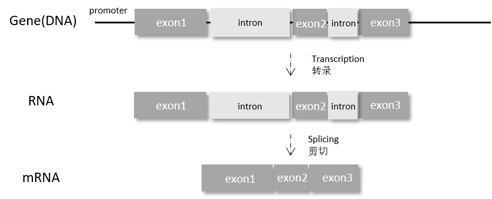
前面的章节已经详细介绍了全基因组测序方法（Whole Genome Sequencing，WGS）与各类高通量测序技术。与全基因组测序相比，全外显子组测序针对外显子区域进行定序测序，是一种成本效益更佳的方法。相比于花费大量的计算资源和时间去分析整个人类基因组的30亿个碱基，全外显子组测序仅需测序约6000万个碱基，时间成本与计算成本都大幅度降低，更适用于个人基因信息的快速检测与大规模群体样本的基因分析。
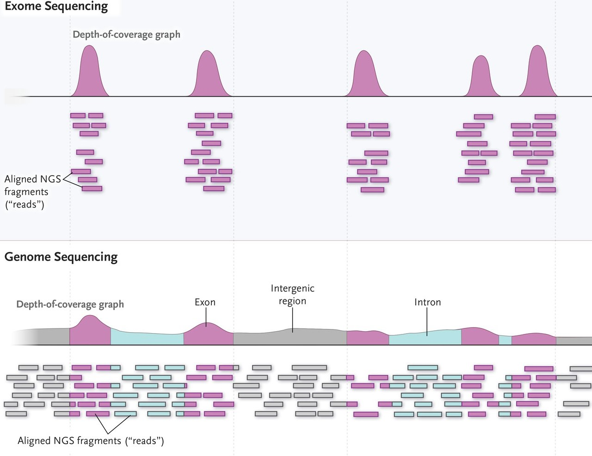
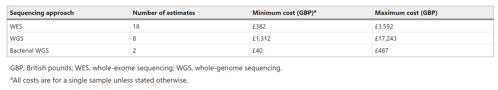
但近年来随着高通量测序技术的发展，测序成本大幅降低，成本已经不是研究机构的主要考量因素，全基因组测序也越来越多出现在科研项目中。 已有研究表明，全基因组测序的产出结果覆盖率高、测序深度稳定，可获得更全面可靠的基因序列，且在单核苷酸突变（SNP）检测方面更为灵敏[4]。
全基因组测序与全外显子组测序各有所长，实际中应当结合研究课题和实验设计选择最合适的测序方案[5]。人类全外显子占基因组不超过2%，却已经涵盖了近85%的已知疾病相关突变，全外显子测序是比全基因组测序更为经济高效的实验方法，适用于孟德尔疾病、肿瘤和复杂疾病等方向的研究。全外显子组测序目前广泛应用于医学临床研究和科研项目中，已经成为临床遗传疾病和罕见病的常规检测方法之一。如对超声异常或单基因遗传病疑似胎儿进行全显子组测序分析，可以快速预估生育风险，并通过早诊断和精准治疗来节省医疗费用[2]。而对于普通人群，分析个人基因组数据可以更科学地评估个体常见疾病风险和提供个人用药建议。
全外显子组测序的优点：
- 高深度(coverage)，全外显子组测序深度一般达到50~100X。全基因组测序深度一般为30X；
- 测序成本低；
- 资料存储空间需求小，仅~2%的基因组序列；
- 计算机资源需求不高，分析计算周期短；
- 分析出来的变异与表型直接关联，可解释性更强；
全外显子组测序的缺点：
- 只能检测外显子组区域的变异（SNP和Indel为主），无法检测外显子组区域以外的变异、拷贝数变异（copy number variation，CNV）和结构变异（structural variant，SV）；
- 测序深度受多方因素影响，测序深度不一致；
- 目前测序过程中定序长度一般大于200bp，而人类基因组大部分外显子的长度都小于200bp，造成浪费；
- 全外显组测序的实际产出的序列只有65%-75%是处于外显子组区域，但可以通过整体提高测序深度的方法来减弱“部分区域测序深度偏低“和“有效序列占比不高“等问题带来的偏差。
通过分析全外显子组测序结果可以得到突变位点信息，其中可能发现一些重要的致病突变，但也有相当多的一部分是未知意义的突变位点，其临床应用意义仍未探明。同时，虽然全外显子测序设计上涵盖近2万个基因（可以理解为外显子序列或转录本），但实际检测的结果全面与否，很大程度取决于前期样本提取实验中是否能尽可能地覆盖和捕获全部外显子组序列，因此对于全外显子的阴性检测结果，还需要进一步考虑是该基因无突变还是该基因未被检测。当然，突变位点注释和样本质量造成的局限性在全基因组测序中也无法避免，相信随着测序技术的不断优化迭代，越来越多数据库的更新迭代，这些问题会逐步得到解决。 在临床应用上，如果只需定向检测已知的致病位点，另一项更有针对性的靶向基因测序（targeted panel sequencing）方案或许是更好的选择。但全外显子组测序又有着更广泛的覆盖范围，能发现更多新的变异情况，因此，测序方案的选择需要根据患者实际需求而选择。
补术语和任务边界，不混用胚系、肿瘤与临床解释。
8.2 示例数据、参考资源与覆盖设计
准备一套能支撑目标检测的匹配输入。
全外显子组测序的覆盖度与测序深度
测序深度代表了参考基因组每个区域被短序列覆盖的次数，测序深度越高，测序结果的识别就越准确，后续的统计分析也越可靠。由于全外显子组样本在上机测序前必须经过捕获（capture）和扩增（PCR amplification）两个步骤，这两个步骤在不同的区域有效率差别，有些外显子区域捕获效率高，有些区域捕获效率低，因此会造成全外显组测序结果测序深度不一致的问题。影响测序深度的因素包括：
- GC含量高的区域（如启动子或UTR）在捕获和扩增时会受到影响^；
- 低复杂度片段（如重复区域）和含有模糊碱基的区域捕获效率偏低；
- 进行PCR扩增的合适为70bp-200bp，零碎或过长的序列片段会受到影响。；
- 假基因的存在影响真实测序深度的计算；
- DNA的数量，如果DNA数量偏低，只能通多高次数PCR循环来达到后续测序所需的样本量，但这会导致大量PCR重复，影响后续数据分析的可信度；
- DNA的质量，如从石蜡包埋样本（FFPE）提取的DNA通常质量较差，某些区域的序列更易破碎，引入偏差；
^G、C碱基之间由3个氢键连接，稳定性较强，不易被打断，所以使得GC含量高的区域通常片段偏大。同时PCR时不易解旋，就算分开后，单股的GC含量高的序列也容易自身粘合形成二级结构。同时，PCR聚合酶可能对GC含量高的片段有偏好性[6]，影响PCR的效果。（这段备注放在与上一段同一页的页脚备注就好）
全外显组测序的探针也略有不同，除了常见的的全外显组探针产品，也可自行设计和定制。研究人员结合现有的参考序列数据和突变信息，可以设计和增加感兴趣区域的探针，也可在特定区域增加探针密度来提高捕获效率。但探针的设计需要综合考虑中靶率（On-target rate）、覆盖度（coverage）、均一性（uniformity）和重复率（Dup rate）等指标。
在不考虑测序成本的前提下，全基因组测序不需要经过捕获步骤，甚至可以不经过PCR扩增直接进行测序，其测序深度能更加稳定，序列分布更均匀，甚至能发现未曾被探针捕获的区域，覆盖的基因组区域更全【7】。
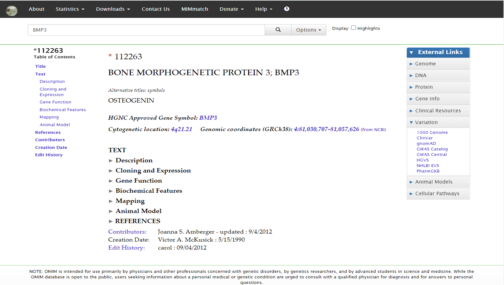
a)WES，WGS_wPCR（经过PCR）和WGS（未经PCR）的WGS所显示的每个GC%的参考基因组的编码外显子区域的平均读取深度，每个数值为五个样品的深度均值。 b)WES和WGS（未经PCR）在不同参考序列中的覆盖率 【6】
补资源下载清单、版本和参考一致性检查。
8.3 DNA比对与变异检测前处理
理解哪些处理改善调用依据及其适用条件。
碱基质量校正
质量校正原理
Phred碱基质量值是由测序仪内部自带的base-calling算法评估出来的，而这种base-calling算法由于受专利保护，掌握在测序仪生成商手中，研究人员并不能了解这个算法的细节，它对于人们来说就是一个黑盒子
而测序仪的base-calling算法给出的质量评估并不十分准确，它带有一定程度的系统误差（非随机误差），使得实际测序质量值要么被低估，要么被高估
BQSR试图利用机器学习的方法来对原始的测序质量值进行校正
例如：
对于一个给定的Run，我们发现，无论什么时候我在测序一个AA 的子序列时，改子序列后紧接着的一个任意碱基的测序错误率总是要比它的实际错误率高出1%，那么我就可以将这样的碱基找出来，将它的原始测序错误率减去1%来对它进行校正
会影响测序质量评估准确性的因素有很多，主要包括序列组成、碱基在read中的位置、测序反应的cycle等等，它们以类似于叠加的形式协同产生影响，这些可能的影响因素被称作协变量 (covariable)
注意：BQSR只校正碱基质量值而不改变碱基组成，特别是对于那些质量值偏低的碱基，我们只能说它被解析成当前碱基组成的准确性很低，但是我们又无法说明它实际更可能是哪种碱基，所以干脆不改
那么，BQSR的工作原理是怎样的？
BQSR本质上是一种回归模型
前提假设：影响质量评估的因素只有reads group来源，测序的cycle和当前测序碱基的序列组成背景（这里将它上游的若干个连续位点的碱基组成看作它的背景，一般为2~6，BQSR中默认为6）
则基于这个前提假设，我们可以得出以下结论：
相同reads group来源，同处于一个cycle，且序列背景相同的碱基，它们具有相同的测序错误率，这样的碱基组成一个bin
则可以建立这样的拟合模型：
\[ X_i=(RG_i,Cyc_i,Context_i) \quad \begin{matrix} f \\ \to \end{matrix} \quad y_i \tag{8.1}\]
其中，i表示当前碱基，\(RG_i\)表示碱基所属的Reads Group来源，\(Cyc_i\)表示该碱基所在的测序cycle，\(Context_i\)表示该碱基的序列组成背景，\(y_i\)表示该碱基的实际测序质量(emprical quality)
这三个分量可以直接通过输入的BAM文件的记录获得，那如何获得实际的实际测序质量呢？
可以通过BAM文件中的比对结果推出
用给定的大型基因组测序计划得到的人群变异位点作为输入，将样本中潜在变异位点与人群注释位点overlap的部分过滤掉，则剩下的那些位点，我们假设它们都是“假”的变异位点，是测序错误导致的误检
则实际测序质量为：
\[ EQ=-10\log \frac{\#mismatch + 1}{\#bases + 2} \tag{8.2}\]
注意：emprical quality是以bin为单位计算出来的
这样，有了X和Y，就可以进行拟合模型的训练了，训练好的模型就可以用于碱基质量值的校正
上述只是BQSR的基本逻辑框架，在实际的实现细节上会稍有一些差别
操作
1. 建立较正模型
质量值校正，这一步需要用到variants的known-sites，所以需要先准备好已知的snp，indel的VCF文件：
# 下载known-site的VCF文件，到Ensembl上下载
$ wget -c -P Ref/mouse/mm10/vcf ftp://ftp.ensembl.org/pub/release-93/variation/vcf/mus_musculus/mus_musculus.vcf.gz >download.log &
$ cd Ref/mouse/mm10/vcf && gunzip mus_musculus.vcf.gz && mv mus_musculus.vcf dbsnp_150.mm10.vcf
# 建好vcf文件的索引，需要用到GATK工具集中的IndexFeatureFile，该命令会在指定的vcf文件的相同路径下生成一个以".idx"为后缀的文件
$ gatk IndexFeatureFile -F dbsnp_150.mm10.vcf
# 建立较正模型
$ gatk BaseRecalibrator -R Ref/mouse/mm10/bwa/mm10.fa -I PharmacogenomicsDB/mouse/SAM/ERR118300.enriched.markdup.bam -O \
PharmacogenomicsDB/mouse/SAM/ERR118300.recal.table --known-sites Ref/mouse/mm10/vcf/dbsnp_150.mm10.vcf2. 质量值校准
# 质量校正
$ gatk ApplyBQSR -R Ref/mouse/mm10/bwa/mm10.fa -I PharmacogenomicsDB/mouse/SAM/ERR118300.enriched.markdup.bam -bqsr \
PharmacogenomicsDB/mouse/SAM/ERR118300.recal.table -O PharmacogenomicsDB/mouse/SAM/ERR118300.recal.bam消除本地路径，补完整输入输出与失败检查。
8.4 基因型似然与局部单倍型重组装
理解为什么一个非参考碱基不等于一个真实变异。
使用GATK鉴定SNV/SNP位点
变异位点基因型推断的数学原理
单点基因型推断
问题描述
某一区域的比对结果如下：
REFERENCE: atcatgacggcaGtagcatat -------------------------------- READ1: atcatgacggcaGtagcatat READ2: tgacggcaGtagcatat READ3: atcatgacggcaAtagca READ4: cggcaGtagcatat READ5: atcatgacggcaGtagc该区域存在一个候选变异位点，且在上面的比对结果中用大写字母标出：该碱基位置共用5条reads成功比对上，其中有4条reads在该位置的碱基组成与参考基因组一致，为G，而只有一条read的碱基组成为A，与参考基因组不同，即G:A=4:1
该个体该位点似乎是一个G/A杂合，因为按照最简单的杂合位点的定义标准，若一个位点中检出的碱基组成中，与参考不一致的碱基组成比例在20%~80%的范围内，就可是算作是一个杂合位点。显然，在本示例中，是满足这个条件的
然后，仅依据碱基组成比例来作这个推断，显然是不够可靠的，因为支持其为G/A杂合的read只有一条，而该read可能来自：
- 实际存在的变异
- 建库过程中引入的错误（PCR）
- 测序过程中错误的碱基检测（base calling）
- 比对错误
因此，为了得到更为可靠的变异检测结果，我们应该综合考虑更多的信息，在给出给出对于位点genotype推断时，同时给出该推断的置信度
那么，如何实现呢？
简单来说，就是基于各genotype(\(G_i\))的人群先验概率\(P(G_i)\)以及特定样本对应位点的测序结果\(S\)，推断其可能为各个\(G_i\)的后验概率\(P(G | S)\)，根据贝叶斯推断的方法，将后验概率最高的那种\(G_i\)作为其最终推断出的genotype，即
\[ G=arg \max_{G_i} P(G_i|S) \tag{8.3}\]
而根据贝叶斯公式：
\[ P(G_i|S)=\frac{P(S|G_i)\cdot P(G_i)}{P(S)} \tag{8.4}\]
由于测序数据确定，\(P(S)\)固定，可以省略，则\(P(G_i|S) \sim P(S|G_i)\cdot P(G_i)\)
另外\(P(G_i)\)是\(G_i\)基因型的人群频率，已经给出，所以要想指定\(P(G_i|S)\)，只需要额外算出\(P(S|G_i)\)即可
注：
当只有少数样本时，可以从对应的大型人群重测序项目中获取基因型的人群频率，例如dbSNP
当有多个样本构成一个人群时，可以从当前研究的人群测序数据中，根据allel频率推算出基因型频率（Hardy-Weinberg equilibrium (HWE)）。
例如，对于某个以A/T形式存在的位点，A的频率为1%（\(p=0.01, q=1-p=0.99\)），则 | AA(\(p^2\)) | AT(\(2pq\)) | TT(\(q^2\)) | |:— |:—|:—| |0.0001|0.0198|0.9801|
我们假设各个read相互独立，则\(P(S|G_i)\)就是各个read的\(P(S_i | G_i)\)的乘积，即
\[ P(S|G_i)=\prod_i P(S_i | G_i) \tag{8.5}\]
则，下面只要分别算出各个\(P(S_i | G_i)\)，最后就能得到\(P(G_i|S)\)
那么，怎么算这个\(P(S_i | G_i)\)呢？
我们令
\[ G_i = \left\{ \begin{array}{ll} G_0 & \textrm{基因型的两个allel与参考基因组都不同} \\ G_1 & \textrm{基因型的两个allel中有一个与参考基因组都相同}\\ G_2 & \textrm{基因型的两个allel均与参考基因组相同} \end{array} \right. \tag{8.6}\]
这里采用二等位、对称翻转错误的简化教学模型；实际四碱基测序错误模型不能直接套用这些式子。
则
\[ \left\{ \begin{array}{ll} P(S_i | G_0) = (1-\epsilon_i)^{1-I_i}\cdot\epsilon_i^{I_i} \\ P(S_i | G_1) = \frac{1}{2}(1-\epsilon_i) + \frac{1}{2}\epsilon_i=\frac{1}{2} \\ P(S_i | G_2) = (1-\epsilon_i)^{I_i} \cdot \epsilon_i^{1-I_i} \end{array} \right. \tag{8.7}\]
其中，\(I_i\)表示该read当前位点碱基组成是否与参考位点一致，若一致\(I_i=1\)，否则\(I_i=0\)
对上面的\(P(S_i | G_i)\)的公式，作一个简单的说明：
以上的3个式子来源于下面的同一形式
\[ P(S_i | G_i)=P(I_i=1)^{I_i}\cdot P(I_i=0)^{1-I_i} \tag{8.8}\]
而不同genotype下，\(P(I_i=1)\)或\(P(I_i=0)\)因为表示测对和测错对应的事件不同，而得到最终不同的公式
上面是将三种可能基因型的\(P(S_i | G_i)\)分别表示出来，为了将它们合并在一个公式中得到更为简洁的表达方式，可采用下面的形式：
符号说明：
| Symbol | Description |
|---|---|
| \(n\) | Number of samples |
| \(m_i\) | Ploidy of the \(i\)-th sample (\(1≤i≤n\))，即i样本的倍型 |
| \(M\) | Total number of chromosomes in samples: \(M=\sum_i m_i\) |
| \(d_i\) | Sequencing data (bases and qualities) for the \(i\)-th sample |
| \(g_i\) | Genotype (the number of reference alleles) of the \(i\)-th sample ( \(0≤g_i≤m_i\) ) |
| \(\phi_k\) | Probability of observing k reference alleles ( \(\sum_{k=o}^M \phi_k=1\) ) |
| \(Pr\{A\}\) | Probability of an event A |
| \(L_i(\theta)\) | Likelihood function for the \(i\)-th sample: \(L_i(\theta)=Pr\{d_i \mid \theta\}\) |
前提假设：
- 不同位点间相互独立；
- 对于同一个位点，不同reads的测序错误或mapping误差相互独立；
- 只考虑二等位情况；
估计某个样本出现特定基因型g的概率：\(L(g)=?\)
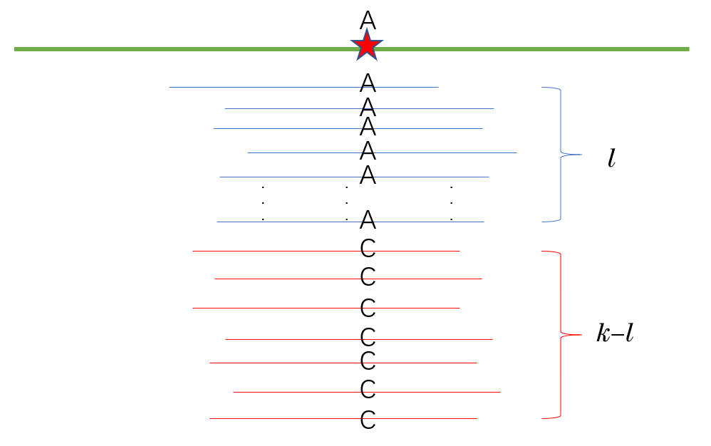
对于某一个样本的某一个位点，有\(k\)条 reads 比对上，其中有\(l\)条 (\(0 \le l\le k\)) 序列在该位点的碱基组成与 reference 一致，剩余 \(k-l\) 条与 reference 不同，其中第 \(j\) 条上该碱基的测序错误率为 \(\epsilon_j\)，则该样本的基因型与ref一致的有 \(g \in [0,m]\) 种（由于这里只考虑人的，则m取值为2，其中g=0表示该样本的基因型与ref一致的allel数为0，即与ref完全不同，例如在该位点可能的二等位为A/C，ref为A，则g=0说明该样本的genotype为C/C，同理，g=1或g=2分别表示该样本的基因型与ref一致的allel数为1或2，在上面举的例子中该样本的基因型就应该为A/C或A/A）的概率为
\[ \begin{aligned} &\quad L(g) \\ &= Pr(d \mid g) \\ &= \prod_{i=1}^l Pr_i(A)\prod_{j=l+1}^k Pr_j(\overline A) & (1)\\ &= \prod_{i=1}^l [Pr_i(B , A)+Pr_i(\overline B , A)]\prod_{j=l+1}^k [Pr_j(B , \overline A)+Pr_j(\overline B , \overline A)] & (2)\\ &= \prod_{i=1}^l [Pr_i(B,C) + Pr_i(\overline B,\overline C)] \prod_{j=l+1}^k [Pr_j(B,\overline C) + Pr_j(\overline B,C)] & (3)\\ \end{aligned} \tag{8.9}\]
其中，\(m\) 是该物种的倍性，普通人是二倍体，因此一般 \(m=2\)
事件\(A=\{测序碱基与\text{ref}一致\}\)，则\(\overline A=\{测序碱基与\text{ref}不一致\}\)
事件\(B=\{该碱基的测序是正确的\}\)，则\(\overline B=\{该碱基的测序是错误的\}\)
事件\(C=\{实际碱基与\text{ref}一致\}\)，则\(\overline C=\{实际碱基与\text{ref}不一致\}\)
上面公式中，从(2)到(3)的推导涉及到最基本的逻辑常识，这里就不再赘述了
由于测序错误与基因组的组成无关，即\(B \bot C\)，因此上面的公式可以向下继续推导：
\[ \begin{aligned} &= \prod_{i=1}^l [Pr_i(C)Pr_i(B) + Pr_i(\overline C)Pr_i(\overline B)] \prod_{j=l+1}^k [Pr_j(\overline C)Pr_j(B) + Pr_j(C)Pr_j(\overline B)] & (4)\\ &= \prod_{i=1}^l \left[ \frac{g}{m}(1-\epsilon_i) + \frac{m-g}{m}\epsilon_i \right] \prod_{j=l+1}^k \left[ \frac{m-g}{m}(1-\epsilon_j) + \frac{g}{m}\epsilon_j\right] & (5)\\ &= \frac{1}{m^k}\prod_{i=1}^l [g(1-\epsilon_i) + (m-g)\epsilon_i] \prod_{j=l+1}^k [(m-g)(1-\epsilon_j) + g\epsilon_j] & (6) \end{aligned} \tag{8.10}\]
上面公式中，(4)到(5)的推导利用了：
\[ \begin{aligned} &Pr(B)=1-\epsilon, \quad Pr(\overline B)=\epsilon & (7)\\ &Pr(C)=\frac gm , \quad Pr(\overline C)=\frac{m-g}{m} & (8) \end{aligned} \tag{8.11}\]
公式 8.11 中的第一行很好理解，在这里就不作更多的解释
对 公式 8.11 中的第二行，下面作一下简单的解释：
由于上面的前提假设中就已经提到，只考虑双等位情况，ref allele即是双等位中的一种，则对于一个m倍体的个体，它该等位基因座上有m个等位基因，其中与ref allele一致的有g个，则剩下m-g个基因座上的allele与ref allele不一致
则，随机从这m个基因座中抽一个，其基因型与ref一致的概率为\(Pr(C)=g/m\)，与ref不一致的概率为\(Pr(\overline C)=1-g/m=(m-g)/m\)
单体型推断
GATK进行SNP calling的核心算法为HaplotypeCaller，这个也是GATK中最核心的算法，理解了这个算法基本上就明白了GATK变异检测的原理
HaplotypeCaller它本质上是对贝叶斯原理的应用，只是相于同类算法它有点不同之处
算法思想概述：
HaplotypeCaller 在候选变异区域进行局部重组装，生成候选单倍型，并评估 reads 对这些单倍型的支持。这里的单倍型是一个区域内的序列组合，并不等于“单倍体个体”。在常用的 GATK 胚系多样本流程中，每个样本先独立生成 gVCF，随后进行联合分型；不能把这两个阶段理解为先把整个人群的 reads 混在一起运行 HaplotypeCaller。
下面进行详细地说明：
在HaplotypeCaller中变异检测过程被分为以下四个大的步骤
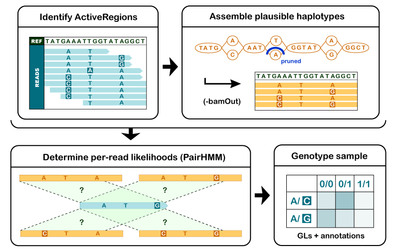
1. 确定候选变异区域（ActiveRegion）
通过read在参考基因组上的比对情况，筛选出潜在的变异区域，这些区域在GATK中被称为ActiveRegion
2. 通过对候选变异区域进行重新组装来确定单倍型
对于每个ActiveRegion，GATK会利用比对到该区域上的所有read（在这里讨论的按样本生成 gVCF 流程中，使用当前样本的 reads）构建一个类似于de Bruijn的图对ActiveRegion进行局部重新组装，构建出该区域中可能的单倍型序列。然后，使用Smith-Waterman算法将每个单倍型序列和参考基因组进行重新比对，重新检测出潜在的变异位点
3. 依据所给定的read比对数据计算各个单倍型的似然值
在步骤2的基础上，我们就得到了在ActiveRegion中所有可能的单倍型序列，接下来需要评估现有数据中对这些单倍型的支持情况
GATK使用PairHMM算法把原本比对于该区域中的每一条read依次和这些单倍型序列进行两两比对，这样我们就可以得出一个read-单倍型序列成对的似然值矩阵，例如以单倍型为列，以read为行，将矩阵记作\((a_{i,j})\)
\[ \begin{array}{l|c|c|c|c} \hline 0 & H_1 & H_2 & .. & H_m \\ \hline r_1 & a_{11} & a_{12} & .. & a_{1m} \\ r_2 & a_{21} & a_{22} & .. & a_{2m} \\ .. & .. & .. & .. & .. \\ r_n & a_{n1} & a_{n2} & .. & a_{nm} \\ \hline \end{array} \tag{8.12}\]
则矩阵中的某一个元素\(a_{ij}\)表示在read i支持单体型为\(H_j\)的似然，即\(P(r_i\mid H_j)=a_{ij}\)
这个矩阵描述每条 read 在每个候选单倍型条件下的似然。软件随后把单倍型层面的证据映射到候选等位基因，并计算基因型似然。不能把跨 reads 的似然直接相加，写成单倍型的概率；下面在条件独立假设下使用似然乘积进行教学推导。具体聚合规则应以所使用的 GATK 版本实现为准。
（* 在该步骤中，Pair-HMM这实际上是GATK中最为耗费计算资源的那部分了，GATK的加速也是常常以此为突破口——比如GPU加速或者把Pair-HMM模块烧录到FPGA芯片中，也有人从算法本身出发发表了关于如何更快计算Pair-HMM的文章：https://journals.sagepub.com/doi/pdf/10.1177/1176934318760543 ）
（4）计算每一个样本在最佳单倍型组合下的基因型（Genotype）
在完成了步骤3之后，我们就知道了每一条read在每个候选变体位点上支持每一种等位基因（Allele）的概率了。那么，最后要做的就是通过这些似然值，计算出候选变异位点上最可能的样本基因型，也就是Genotype——这也是发现真正变异的过程。这就需要应用贝叶斯原理来完成这个计算了——GATK这也是到这一步才使用了该原理，通过计算就可以得到每一种Genotype的可能性，最后选择后验概率最高的那一个Genotype作为结果输出至VCF中
后面的分析中，对于每一个变异位点假设只有二等位形式——注意：这和一个ActiveRegion中存在多种单体型不矛盾，若一个ActiveRegion在群体中存在n个变异位点，在只考虑二等位形式的前提下，该区域具有的单体型总共有\(2^n\)种
下面来推导某个样本中的某一个变异位点最可能的SNP形式
该样本在该位点的genotype为G的后验概率为：
\[ P(G \mid D) = \frac{P(G)P(D \mid G)}{\sum_i P(G_i)P(D \mid G_i)} \tag{8.13}\]
由于分母部分对于任何形式genotype都一样，即它是个定值，所以可以忽略，因此上面的公式可以简化成：
\[ P(G \mid D) \propto P(G)P(D \mid G) \tag{8.14}\]
其中，\(P(G)\) 是基因型 \(G\) 的先验概率，不能与单个等位基因的频率混为一谈。工具对先验的处理取决于模型和参数，不能假定 GATK 默认给所有基因型相同先验。
\(P(D \mid G)\)表示在已知样本genotype为G的前提下，对样本进行测序得到的测序数据为D（仅考虑该ActiveRegion范围内的）的条件概率，我们假设每条reads之间是相互独立的，所以
\[ P(D \mid G)=\prod_j P(D_j \mid G) \tag{8.15}\]
其中，\(D_j\)表示该样本测序数据D中的第j条read
由于我们正常人都是二倍体，则对于某一条reads，它既可能来自于同源染色体1，记作\(H_1\)，也可能开自于同源染色体2，记作\(H_2\)，所以
\[ \begin{aligned} &\quad P(D_j \mid G) \\ &= P(D_j,H_1 \mid G) + P(D_j,H_2 \mid G) \\ &= P(H_1 \mid G)P(D_j \mid H_1) + P(H_2 \mid G)P(D_j \mid H_2) \end{aligned} \tag{8.16}\]
由于理论上一条read来源于\(H_1\)还是\(H_2\)的概率是均等的，都为1/2，即\(P(H_1 \mid G)=P(H_2 \mid G)=1/2\)，所以
\[ P(D_j \mid G)=\frac{P(D_j \mid H_1)}{2} + \frac{P(D_j \mid H_2)}{2} \tag{8.17}\]
因此 公式 8.15 可以改写成
\[ P(D \mid G)=\prod_j \left( \frac{P(D_j \mid H_1)}{2} + \frac{P(D_j \mid H_2)}{2}\right) \tag{8.18}\]
现在如果想算出\(P(G \mid D)\)，就差\(P(D_j \mid H_n)\)了，那么，如何算\(P(D_j \mid H_n)\)呢？
上面已经提到，\(P(D_j \mid H_n)\)表示的是由同源染色体\(H_n\)产生read \(D_j\)的条件概率，而每条同源染色体有它各自的单体型，所以这里可以把\(H_n\)理解为它对应的单体型，则\(P(D_j \mid H_n)\)可以理解为在特定单体型\(H_n\)的前提下，产生read \(D_j\)的条件概率
先校订数学与算法，再用可手算的小例子重新组织。
8.5 单样本调用、gVCF与联合分型
理解单样本检测和多样本分型之间的关系。
全外显子组数据分析实战
全外显子组测序实验的整体工作流程如下:
- 样品制备，核酸分离提纯；
- DNA片段化；
- DNA文库构建；
- 使用探针靶向捕获外显子序列；
- PCR扩增；
- qPCR进行质量控制（若需）；
- 测序；
- 分析数据，突变检测；
好的样本制备实验能保证后续数据分析的准确度，两部分的工作相辅相成。本节我们将进入下机数据分析的实战环节，只要针对双端测序样本的外显子组下机数据分析，如果是单端测序，可以自行调整Trimmomatic和bwa代码变为单端测序模式，其余步骤不变。
所需软件： - fastqc - multiqc - bwa - samtools - gatk （此处用gatk 4.1版本） - Annovar
运行代码如下：
基本的处理思路是，下机序列经过数据质控后，比对到参考序列上找到最有可能的原位置，结合现有的常见突变位点信息进行筛选，过滤得到样本个体的突变位点信息，并存储在VCF（Variant Call Format）文件中。 利用ANNOVAR软件，同样地结合前人总结的突变信息（humandb/目录下）来注释和解析检测到的个体突变位点，并探索突变与个人生理状态和疾病发展的可能联系。
thread=1
ref=ref/references_hg38_v0_GRCh38.primary_assembly.genome.fa
data=data/
sample=WXS_example
gatk_db=ref/gatk/
annovar=/home/huaping/software/annovar/annovar/
###############
# fastq QC
################
#fastq-dump SRR8381428 --split-3
#fastqc -o fastqc/ ${data}/${sample}*.fq.gz
#bash check_phred.sh ${data}/${sample}_1.fq.gz
##Running Trimmomatic
##Paired End Mode:
##trimmomatic PE [-threads <threads] [-phred33 | -phred64] [-trimlog <logFile>] <input 1> <input 2> <paired output 1> <unpaired output 1> <paired output 2> <unpaired output 2> <option 1>...
time trimmomatic PE -phred33 ${data}/${sample}_1.fq.gz ${data}/${sample}_2.fq.gz ${data}/${sample}_1.clean.fq.gz ${data}/${sample}_1.clean.unpaired.fq.gz ${data}/${sample}_2.clean.fq.gz ${data}/${sample}_2.clean.unpaired.fq.gz MINLEN:20 LEADING:20 TRAILING:20 && echo "trim done $(date "+%Y-%m-%d %H:%M:%S")"
mkdir -p fastqc/
fastqc -o fastqc/ ${data}/${sample}*clean.fq.gz &&
multiqc fastqc/${sample}*.zip -o fastqc && echo "QC done $(date "+%Y-%m-%d %H:%M:%S")"
##gatk annotation files download
##################
##alignment
##################
mkdir -p BAM/
#bwa index -a bwtsw ${ref} &&
bwa mem -M -Y -R '@RG\tID:sample_1\tSM:sample\tLB:WES\tPL:Illumina' ${ref} ${data}/${sample}_1.clean.fq.gz ${data}/${sample}_2.clean.fq.gz | samtools view -Sb - > BAM/${sample}.bam && echo "alignment done $(date "+%Y-%m-%d %H:%M:%S")"
#################
#sam file preprocessing - sort and markduplicate
#################
samtools sort -o BAM/${sample}.sorted.bam BAM/${sample}.bam &&
picard MarkDuplicates -Xmx64g I=BAM/${sample}.sorted.bam O=BAM/${sample}.sorted.markdup.bam M=BAM/${sample}.sorted.markdup.txt &&
picard BuildBamIndex -Xmx64g I=BAM/${sample}.sorted.markdup.bam && echo "markduplicate done $(date "+%Y-%m-%d %H:%M:%S")"
#samtools faidx ${ref} &&
#picard CreateSequenceDictionary R=${ref} O=${ref/\.fa/}.dict &&
##########################
#BQSR
##########################
gatk BaseRecalibrator -R ${ref} -I BAM/${sample}.sorted.markdup.bam \
--known-sites ${gatk_db}resources_broad_hg38_v0_Mills_and_1000G_gold_standard.indels.hg38.vcf.gz \
--known-sites ${gatk_db}resources_broad_hg38_v0_Homo_sapiens_assembly38.known_indels.vcf.gz \
--known-sites ${gatk_db}resources_broad_hg38_v0_hapmap_3.3.hg38.vcf.gz \
--known-sites ${gatk_db}resources_broad_hg38_v0_Homo_sapiens_assembly38.dbsnp138.vcf \
-O BAM/${sample}.BQSR.table
gatk ApplyBQSR -R ${ref} -I BAM/${sample}.sorted.markdup.bam -bqsr BAM/${sample}.BQSR.table -O BAM/${sample}.sorted.markdup.BQSR.bam && echo "BQSR done $(date "+%Y-%m-%d %H:%M:%S")"
###########################
##Variant calling - haplotypecaller
##########################
mkdir -p VCF/
gatk HaplotypeCaller -R ${ref} -I BAM/${sample}.sorted.markdup.BQSR.bam -O VCF/${sample}.vcf && echo "variant calling done $(date "+%Y-%m-%d %H:%M:%S")"
###########################
#Annotation -ANNOVAR
###########################
${annovar}table_annovar.pl VCF/${sample}.vcf ${annovar}humandb/ -buildver hg38 -out VCF/${sample} -remove -protocol refGene,cytoBand,exac03,avsnp147,dbnsfp30a -operation gx,r,f,f,f -nastring . -vcfinput -polish && echo "annotation done $(date "+%Y-%m-%d %H:%M:%S")"新增流程说明与小型对照，控制队列扩展的运算规模。
8.6 VCF解读、过滤与质量评估
能区分候选位点与支持充分的结果。
待完善
8.7 变异注释与证据分层
区分检测结果、功能预测、数据库记录和实际证据。
测序数据的下游分析方向
经过上述的流程处理，带有注释结果的突变位点将存储在VCF文件中，具体格式介绍见前面章节。除了对突变位点进行注释外，还可以进一步有选择性地对突变位点/基因进行功能性分析和关联分析。在此简单介绍一下可行的研究方向和思路和可能会用到的数据库，数据库包括现有的文献数据库（如NCBI Pubmed）和生物数据库：
- 从位点/基因层面出发进行功能分析；
- 从基因层面出发进行通路分析，发掘与目标基因相关的代谢通路及其相互关系；
- 从样本层面出发，比较公开数据库中同类型人群的基因特征进行结果验证。同理，也可结合非公开的临床样本进行验证分析和实验分析；
突变位点相关数据库查询
OMIM（Online Mendelian Inheritance in Man）https://omim.org/ 是比较全面、权威的人类孟德尔遗传数据库，主要关注表型（孟德尔遗传病为主）和基因型之间的关系。自1960年代初开始建立，并在1987年启动在线网站，实现免费公开查询。目前，OMIM数据库保持每日更新，存储记录了超过15,000个基因的信息（截至2020年9月）。OMIM数据库界面简洁清晰、内容全面、操作简便，是遗传学、基因组学和医学领域等领域的重要数据库。
COSMIC （Catalogue Of Somatic Mutations In Cancer，癌症体细胞突变数据库）https://cancer.sanger.ac.uk/cosmic 主要记录与癌症相关的体细胞突变（somatic mutation）信息，可供学术研究人员免费使用。数据库自2004年建立开始快速发展，目前储存了超过1000个全基因组序列信息，1.6万例样本信息和超过250万个突变位点（截至2020年9月）。COSMIC数据库主要来自科学文献中收集已被报道的癌症基因突变位点（Tier1: 具有与癌症相关的活动记录和突变证据，突变以促进致癌转化的方式改变基因产物的活性。），或者是来自大人群癌症研究的结果位点（Tier2：在癌症样本中检测到了大量该基因的突变但与癌症的相关意义未明确）。体细胞突变是指并非由遗传得到、个体在受精卵发育后发生的突变，通常情况下体细胞突变不会造成自身后代的遗传改变。体细胞突变不一定引起表型变化，但也可能引起多种疾病，包括癌症。
ClinVar https://www.ncbi.nlm.nih.gov/clinvar/ 是NCBI主办的，与疾病相关的人类基因组变异数据库。它整合了dbSNP、dbVar、Pubmed、OMIM等多个数据库的遗传变异和临床表型信息。同时，每个研究机构都可以向其提交数据，并由专家团队对信息进行审核评级。按提交的注释信息和证据的可靠性，每个突变位点从高到低被评为4个星级，研究人员在查询相关位点时，可以结合注释信息、证据和专家评级综合考虑。Clinvar数据库体系依照疾病类别分成不同的数据库，并由熟悉该领域的专家团队来管理和审核，不断更新优化，形成一个标准的、可信的遗传变异-临床相关的数据库。
BRCA Exchange https://brcaexchange.org/ 整合了Clinvar和LOVD等数据库，专门针对乳腺癌易感基因BRCA1 和BRCA2（Breast cancer susceptibility gene 1/2）进行突变位点注释和记录，目前（截至2020年9月）有超过4万条位点记录。BRCA基因是目前研究比较深入的肿瘤易感基因，早期研究发现，女性BRCA突变携带者患乳腺癌和卵巢癌的风险大幅度提升。近年研究发现，结肠癌、胰腺癌、皮肤癌和男性前列腺癌等疾病的发生也与BRCA基因相关。基因序列中不同位置的突变会造成带来不同的影响和风险，BRCA基因无热点突变或热点区域，即基因上存在上万种突变的可能性，因此针对突变位点的注释数据库就变得非常重要，只有了解了该突变位点的风险，才能采取更有针对性预防或治疗措施。
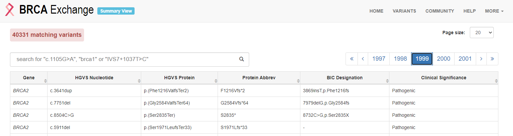
数据库使用案例
以实战代码中找到的一个突变为例，利用OMIM 和 COMICS数据库进行进一步查找。
根据结果VCF注释查找感兴趣的突变位点 VCF文件中会突变所在位置（Func.refGene）、涉及的突变基因（Gene.refGene）以及功能变化（ExonicFunc.refGene），假如说从风险度比较高的突变开始查起，4号染色体的第81046034碱基从C变成了T，基因型GT=1/1，且被标注了“Func.refGene=exonic; Gene.refGene=BMP3; ExonicFunc.refGene=nonsynonymous_SNV“，即认为在BMP3基因的编码区上有非同义突变，由此可以去数据库中搜索基因BMP3的信息，查看突变是否与样本表征有相关关系。OMIM数据库中记录了基因功能、生化特征、基因关系图、相关文献等信息。右侧菜菜单栏还可以点击进入外部数据库，查看该基因的DNA 、蛋白质、临床资源、动物模型、细胞通路等信息。
根据感兴趣的基因查找相应突变位点 以癌症研究为例，关键任务是找到疾病相关的突变基因。前期大量的科研人员已经发现和总结了一些与癌症相关的基因。 COSMIC数据库中的CGC（Cancer Gene Census，https://cancer.sanger.ac.uk/census )是整理好的癌症相关基因目录，可供查询和下载。在数据库中查找目标疾病的相关基因目录，并在结果VCF文件中看是否有相关基因突变位点。
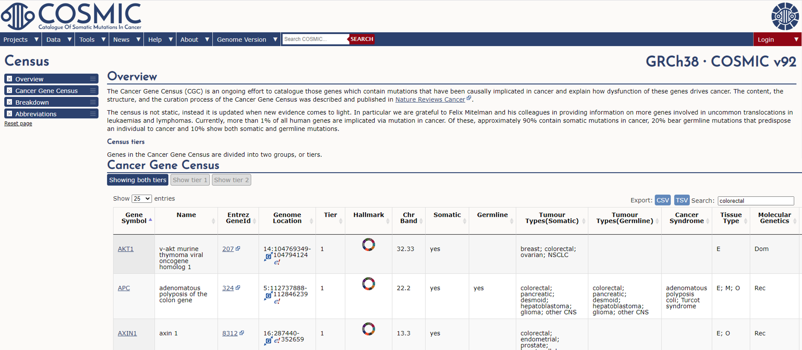
以结直肠癌（colorectal cancer）为例，从CGC中查找关键词“colorectal”得到723条记录。关注其中的MSH6基因，在VCF中查找相应基因可用代码 $grep -v “#”
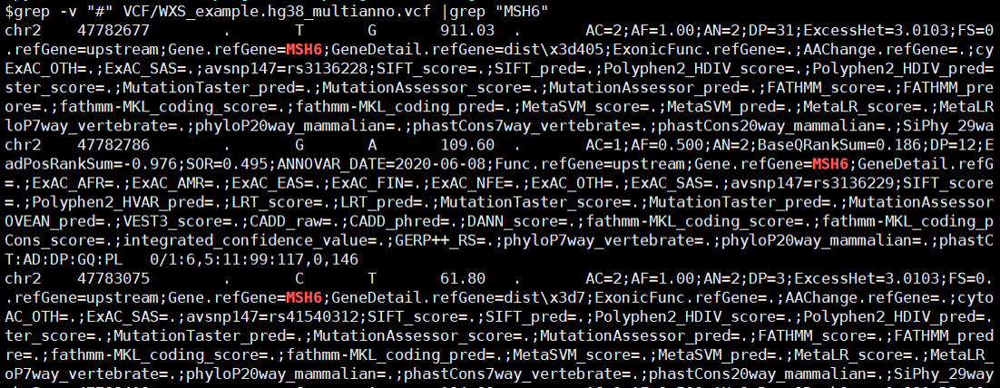
在COSMIC数据库中直接查找基因可以获得更多的信息，还有编码蛋白质的3D模型。COSMIC-3D （https://cancer.sanger.ac.uk/cosmic3d/） 是交互式的网页，可以通过鼠标翻转和缩放蛋白质的三维结构，网页下方记录了错义突变的位置，点击措意突变的位置可以查看对应的小分子，估计结合位点，网页信息可以跳转蛋白质数据库PDB（Protein Data Bank）继续详细查看。
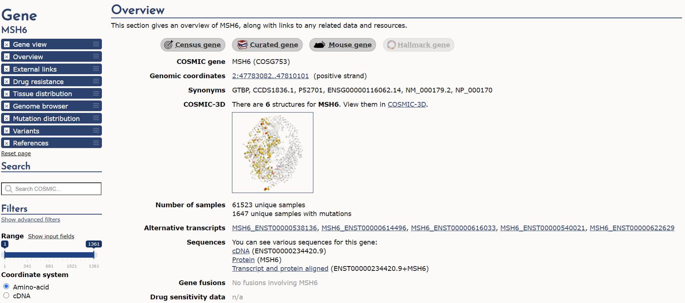
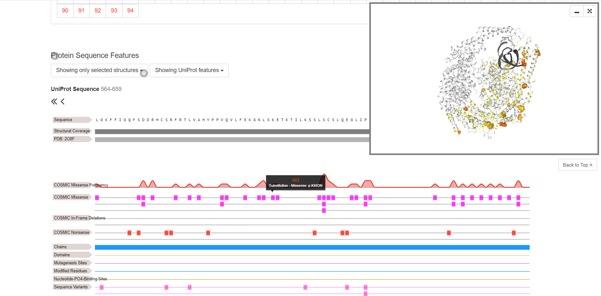
通路分析
KEGG（Kyoto Encyclopedia of Genes and Genomes，京都基因与基因组百科全书） https://www.genome.jp/kegg/pathway.html 数据库把基因与细胞、物种进行关联，KEGG PATHWAY子数据库通过清晰明了的图表来表述基因和代谢物所参与的代谢通路，同时更全面地展现通路内部变化以及代谢通路之间的关系。数据库中将生物代谢通路划分为 6 类：细胞过程（Cellular Processes）、环境信息处理（Environmental Information Processing）、遗传信息处理（Genetic Information Processing）、人类疾病（Human Diseases）、新陈代谢（Metabolism）、生物体系统（Organismal Systems），在此基础上还继续按具体生命活动细分子通路，记录包含其通路代谢图和具体注释等信息。
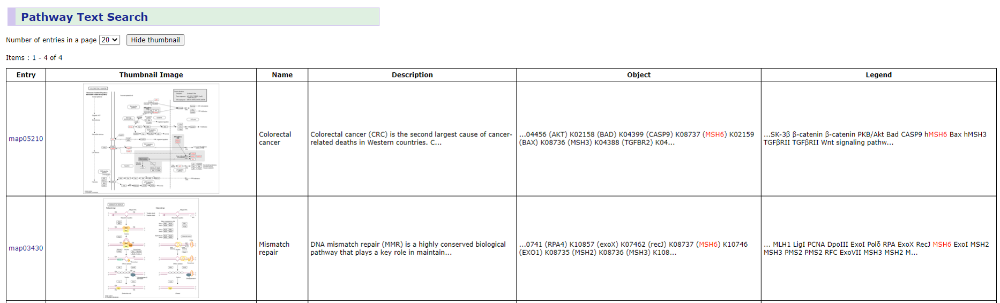
Metascape https://metascape.org/gp/index.html#/main/ 是2015年12月首次发布，整合了GO、KEGG、UniProt和DrugBank等多个权威的数据资源，且每月更新其相关的40多个数据库，保证查询结果的时效性，是目前较为常用的通路富集和生物过程注释数据库。除了记录模式生物的通路信息，数据库还包含了蛋白质相互作用通路，可进行基因相关的蛋白质网络分析和药物分析。
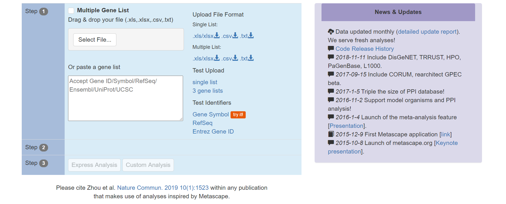
样本数据库寻找数据集进行验证或辅助分析
TCGA（The Cancer Genome Atlas）https://portal.gdc.cancer.gov/ 是美国国家癌症研究所(National Cancer Institute)和美国人类基因组研究所(National Human Genome Research Institute)共同监管的一个基于肿瘤病人样本的数据库项目，旨在借助高通量测序技术对癌症基因组进行读取和分析，帮助人类理解癌症，提高对癌症的预防、诊治能力。TCGA数据库包含丰富且规范的样本多组学数据和临床数据，包括mRNA表达、miRNA表达数据、拷贝数变异、DNA甲基化、突变位点等，研究人员还可通过申请获准下载原始下机数据，是癌症研究中非常重要的数据库。
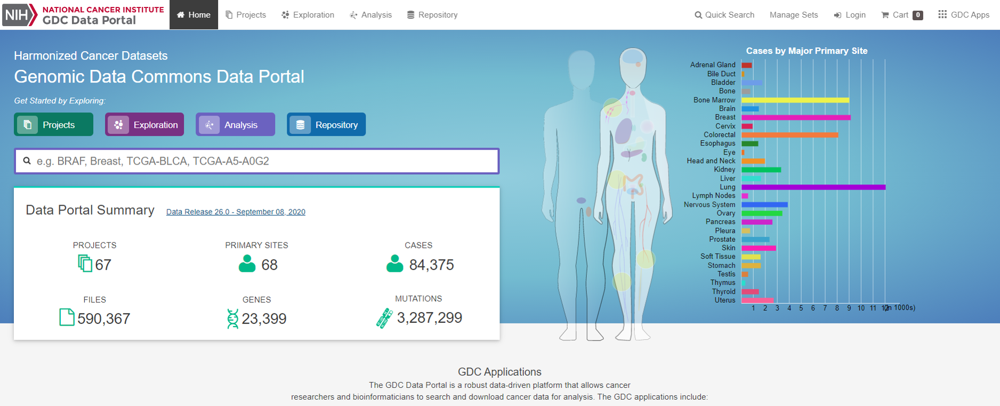
CCLE（Cancer Cell Line Encyclopedia，癌症细胞系的百科全书）https://portals.broadinstitute.org/ccle 目前存储了1457种（截至2020年9月）癌症细胞系的免费公开基因组数据，旨在对大量癌症模型进行详细的遗传学和药理学表征分析，开发基因与药物效用相关的综合分析流程，同时在体外运用细胞系模拟癌症患者分层样本进行更多的肿瘤药理研究实验。
更新示例和数据库描述，强调注释版本与证据来源。
8.8 IGV复核、基准评价与完整交付
评估分析流程的准确性并报告其检测边界。
待完善